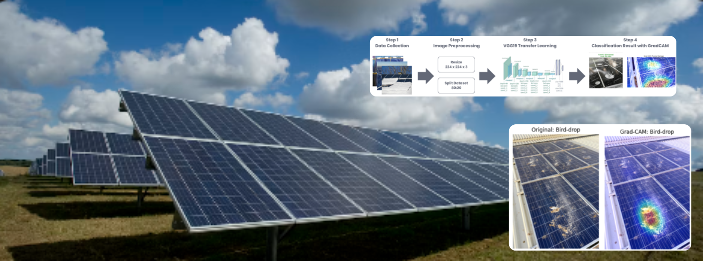
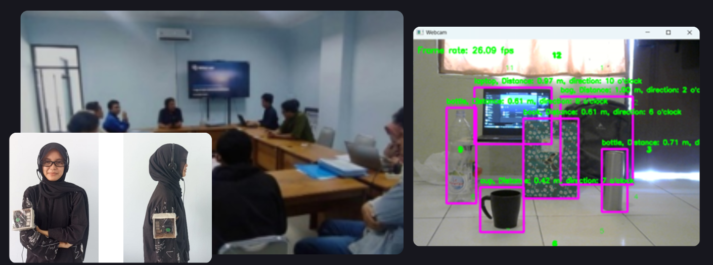
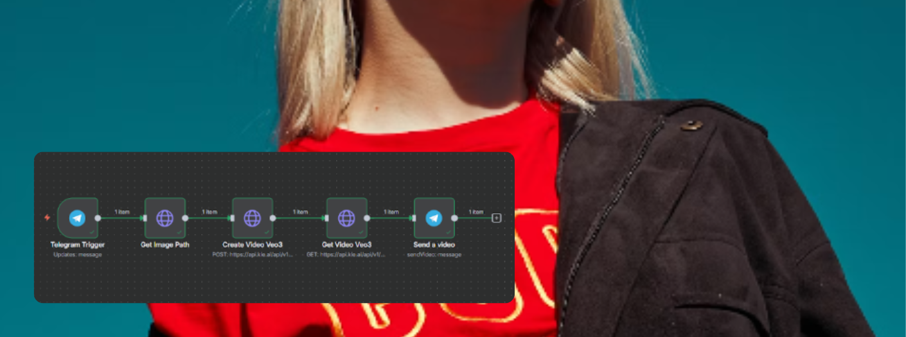

Computer Vision · Research
Scopus Q1 • Elsevier • EAAI
Solar Panel Defect Detection
Built an explainable AI solution to identify solar panel defects by combining deep learning with Grad-CAM visualization for clearer model interpretation.
Python
VGG19
Grad-CAM
Read Publication →
Generative AI · RAG
Supernote AI
Built a modern AI-powered note-taking product that goes beyond basic note storage. The app supports semantic search and an AI assistant that answers questions using the user’s personal notes, turning everyday notes into an
intelligent knowledge base.
Semantic Search
AI Chatbot
RAG
Gemini AI
Vector Embedding

Computer Vision · Research
Smart Glasses Object Recognition
Executed precise data annotation on 2,000+ images across 12 classes using Roboflow, ensuring dataset quality control for training YOLOv8 object detection models in smart-glasses vision systems.
YOLOv8
Roboflow
OpenCV
Patent Application · EC002024192839

AI Automation · Generative AI
OOTD Video Generator
Built an automated content workflow using n8n and Telegram Bot to turn product assets into AI-generated outfit videos with Veo 3, making fashion publishing faster and more scalable.
n8n
Telegram
AI Video
Veo 3
View Project →